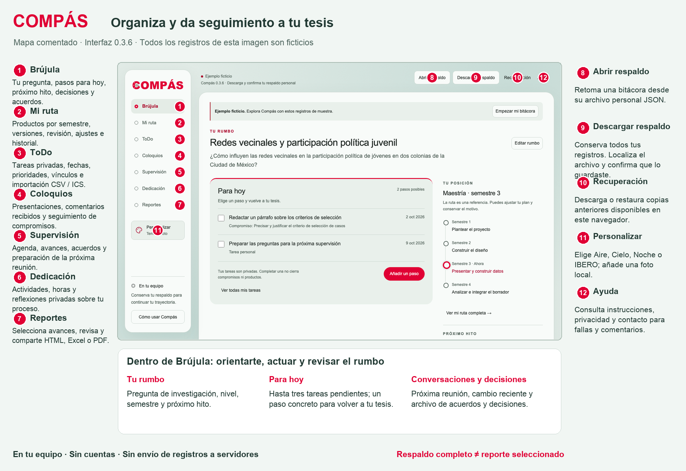
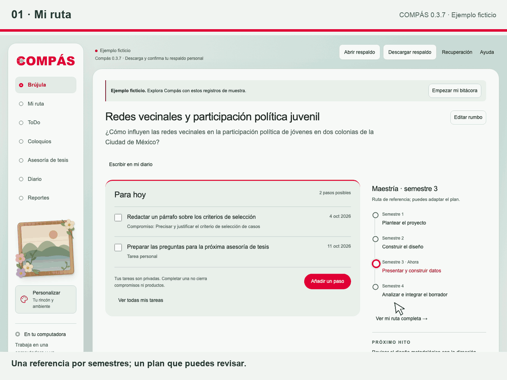
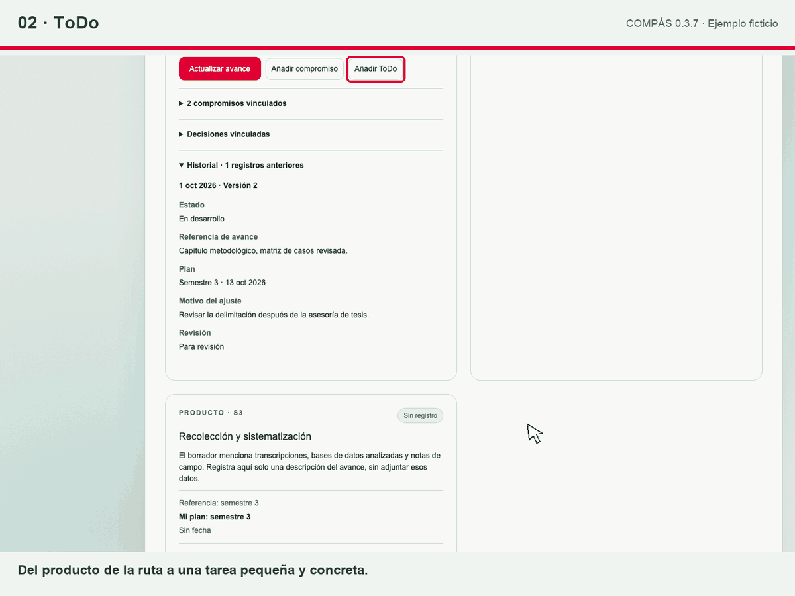
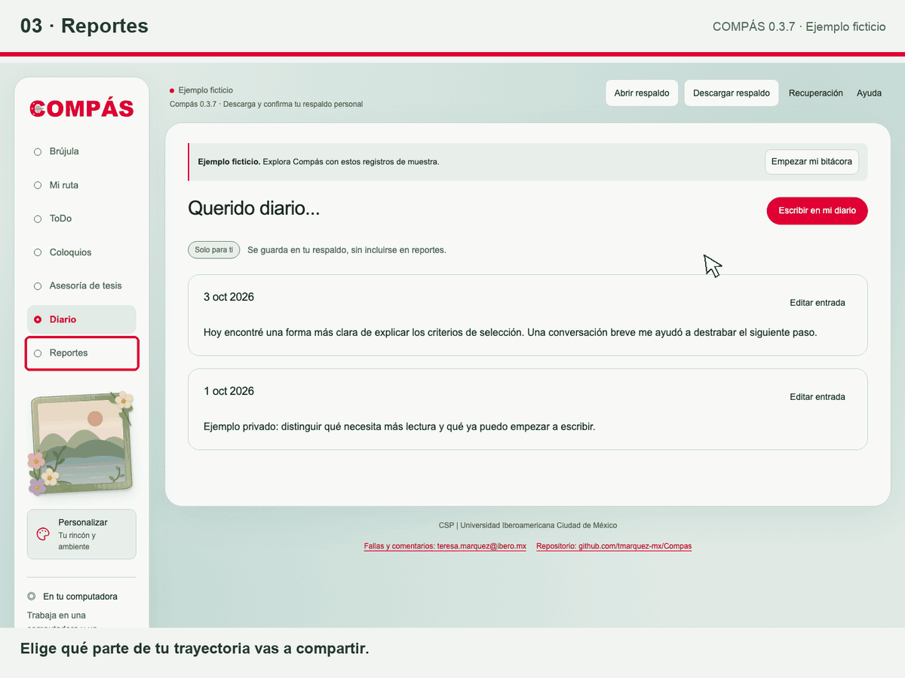

Una trayectoria que puedes revisar
Orientarte, dar un paso y preparar la siguiente conversación. Compás reúne decisiones, acuerdos y próximos pasos para organizar y dar seguimiento a tu tesis.
Capturas reales de la versión 0.3.6 · Ejemplo ficticio · Funciona sin conexión al abrir este recorrido desde el ZIP.Conoce tu espacio de trabajo
Los números señalan los siete módulos y los controles de respaldo, recuperación, personalización y ayuda. Abre el mapa a tamaño completo para leer cada función.


Tres recorridos, una misma historia
Abre cada recorrido para ver la animación. Las acciones se realizaron en la aplicación con registros ficticios.
1. Mi ruta · actualiza un producto y conserva su historia
Consulta semestres, registra una versión del diseño metodológico, ajusta la fecha con un motivo y revisa el historial. Cada corte conserva el anterior.

2. ToDo · convierte un producto en un paso concreto
Desde Mi ruta, crea una tarea vinculada, elige fecha y prioridad, guárdala y márcala terminada. Completar la tarea no aprueba el producto ni cierra compromisos.

3. Reportes · comparte los avances que tú eliges
Pon un título, selecciona un compromiso y un producto, revisa la vista previa y descarga el panel de consulta. También puedes descargar Excel o imprimir y guardar PDF.

Dos archivos, dos propósitos. El respaldo personal conserva todos tus módulos y permite continuar trabajando. El reporte comparte una selección con fecha de corte. ToDo, horas, reflexiones y notas privadas quedan fuera de los reportes. Descarga tu respaldo, localiza el archivo y confirma que lo guardaste.
Registra decisiones metodológicas y revisiones de avances. Conserva entrevistas, transcripciones y bases de datos fuera de Compás.